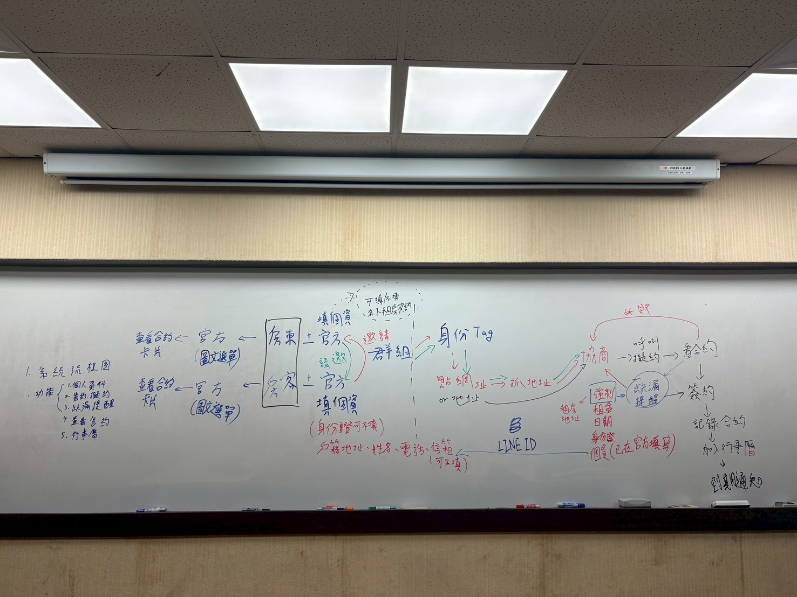

開發中 / 畢業專題
ECS NEO｜LINE 租屋協商存證與租約草稿生成系統
本專題開發一套結合 LINE Bot 與 AI 的租屋協商輔助系統，協助房東與房客在 LINE 群組中保存租屋協商紀錄，並透過 AI 從對話中整理租金、押金、租期、水電、設備、修繕責任等租屋條件，最後產生租約草稿，降低日後租屋糾紛。
- Problem
- 租屋協商常分散在 LINE 對話、物件頁面與口頭確認中，日後容易缺少可追蹤、可確認的條件紀錄。
- My Role
- 參與系統架構規劃與畢業專題方向收斂，規劃 LINE Bot 作為租屋協商入口，設計 AI 條件抽取流程，並參與 condition_json schema、缺漏欄位檢查與租約草稿生成流程討論。
- Tech Stack
- LINE Bot / LINE Messaging API / Webhook / AI Agent / condition_json / Schema Validation / 資料預處理 / 租約草稿生成 / Node.js or Python / SQLite or MySQL / API Integration
- Workflow
- 591 找房 → LINE 群組協商 → Bot 保存協商紀錄 → AI 整理租屋條件 → 產生租約草稿 → 雙方確認後自行簽署。
- Status
- 正在開發與規劃實作中，已完成部分 POC 驗證；目前不描述為正式上線產品。
- What I Learned
- 將 AI 角色限制為「條件抽取器」，再由後端進行 schema 檢查與模板渲染，可降低生成式 AI 憑空產生租約內容的風險。目標是產出可供雙方確認的租約草稿，而非取代律師、公證人或正式電子簽章平台。
- 以 LINE 群組作為租屋協商場域，規劃 Bot 保存加入後的文字、圖片、檔案與時間戳，形成可追蹤的協商紀錄。
- 設計 AI 條件抽取流程，將非結構化 LINE 對話整理為固定格式 condition_json。
- 規劃缺漏欄位檢查機制，提醒雙方補充租金、押金、租期、水電、修繕、報稅、租補等尚未確認項目。
